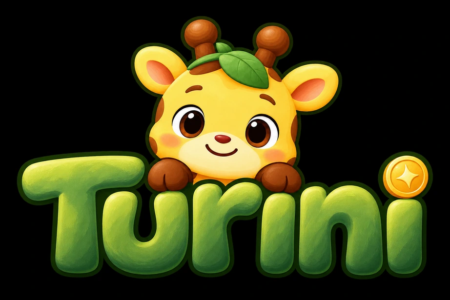
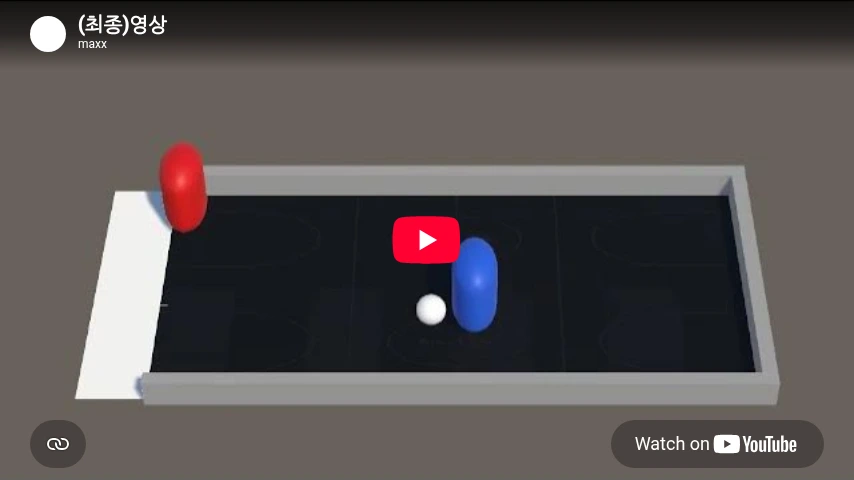

01 / RAG SYSTEM

PERSONALIZED FINANCIAL LEARNING구현에서 검증으로.
신뢰할 수 있는 AI를 향해.
Building AI. Questioning reliability.
안녕하세요. 상명대학교 휴먼지능정보공학을 전공하는 이승윤입니다. RAG 시스템을 개발하며, 답변을 만드는 것에서 한 걸음 더 나아가 시스템의 품질을 어떻게 평가할 것인지에 관심을 갖게 되었습니다.
LLM 평가, RAG, NLP를 중심으로 구현과 실험을 이어가고 있습니다. 헬스케어 AI와 메디컬 AI에도 관심이 있으며, 의료·건강 분야에서 신뢰할 수 있는 AI의 활용을 탐구하고자 합니다. 의미 있는 평가 환경을 설계하고 실패 원인을 분석하는 LLM/NLP 연구자로 성장하고자 합니다.
RAG에서 강화학습, 데이터 연구까지.
문제를 정의하고 결과를 해석한 세 가지 경험입니다.

PERSONALIZED FINANCIAL LEARNING
STATE → ACTION → REWARDUnity ML-Agents로 페널티킥 환경을 구현하고, 강화학습을 통해 에이전트가 행동을 학습하도록 했습니다. 학습 결과와 함께 설계의 변화와 실패 원인을 기록했습니다.
성공 장면을 넘어, 상태·행동·보상 설계와 학습 설정이 어떤 차이를 만드는지 비교하고 설명하는 과정에 집중했습니다.
MESA Sleep Study의 액티그래피 원자료 2,159개에서 일별 수면 변동성을 산출하고, 최종 분석 대상자 1,527명의 주간 졸림 척도(ESS)와의 관련성을 평가했습니다.
평균 수면시간과 나이·성별·BMI·AHI 보정 후에도 수면시간 변동성과 ESS 사이에 작은 양의 관련성을 관찰했습니다. 추가 설명력은 약 0.49%p로 제한적이었으며, 인과관계로 해석하지 않았습니다.
평가 지표가 실제 시스템 품질을 얼마나 잘 반영하는지, 현실적인 제약을 담은 평가 환경은 어떻게 설계할 수 있는지 탐구하고 싶습니다.
지표가 서로 다른 결과를 가리킬 때 원인을 분석하고, 검색과 생성의 실패를 구분하며 신뢰성을 개선하는 데 관심이 있습니다.
RAG 평가 경험을 LLM 에이전트와 장기 상호작용으로 확장해, 실제 조건에서의 동작과 신뢰성을 연구하고자 합니다.
Python / C / C# / SQL / TypeScript
scikit-learn / XGBoost / LightGBM / Reinforcement Learning / Unity ML-Agents / LLM Evaluation / Model Quantization
Git / GitHub / GitHub Actions / Firebase / React Native / Unity
LET'S START A CONVERSATION